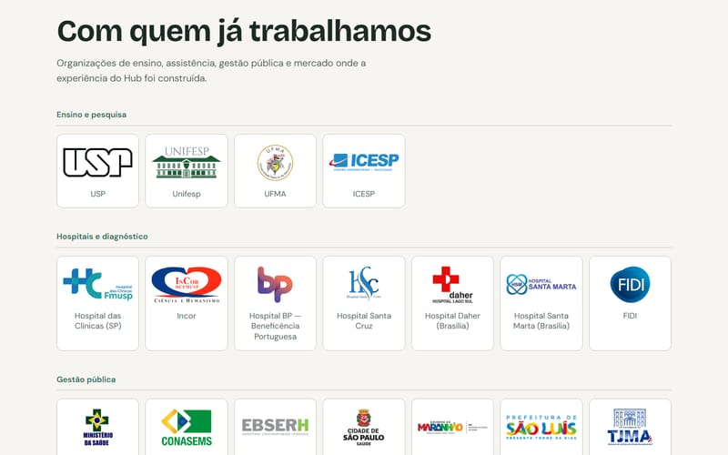
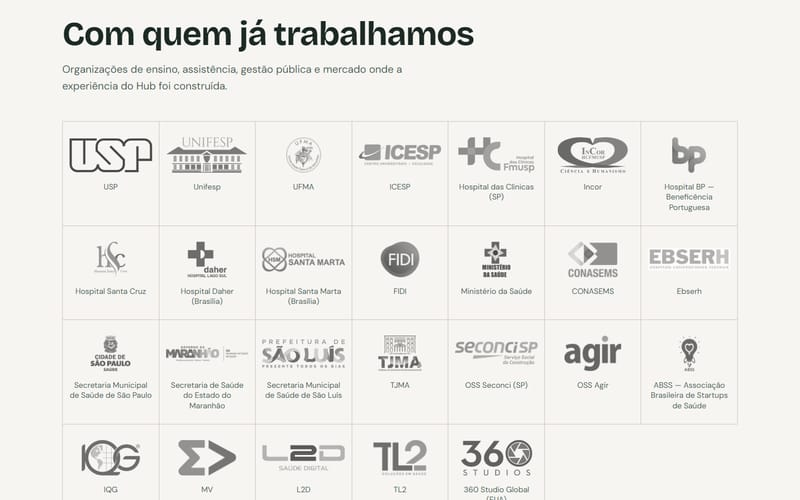
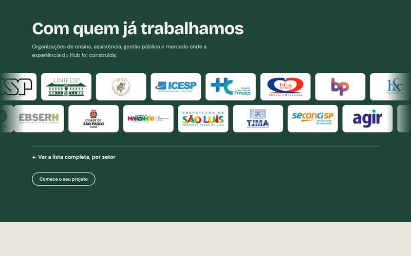

Hub Saúde Negócios · seção de clientes
Três opções para “Com quem já trabalhamos”
Cada opção abre a página inteira, igual à atual; só muda a seção dos clientes. Veja as três e escolha a que mais combina com o Hub.
-

-

-
